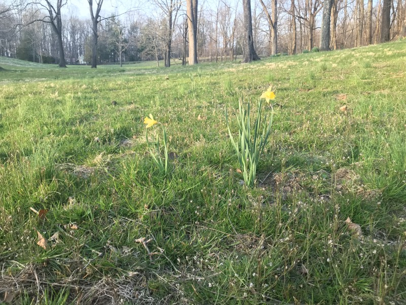

April 12, 2018
Naturalize Your Lawn

Each year, as our yard begins to turn green, I smile and think of the battles Finley fought to convert our “lawn” to more eco-friendly habitat. It all began with a book we were given by Aunt Lynn (Ike’s big sister), talking about the benefits of “natural lawn care”, which included healthier grass, less sound and air pollution from mower use, less nitrogen runoff spoiling our drinking supplies and waterways, much healthier habitat for bugs, critters, birds, and small mammals, more carbon sequestration, and an easier lawn to maintain that was more resilient to drought and other stresses. We already avoided pesticides completely, and rarely used fertilizer, but Finley wanted us to be better.
She was relentless. She never argued about it, but she never stopped asking. The first victory was eliminating fertilizers completely and ensuring the mower deck was at it’s highest possible setting. Next, she pushed to delay as much as possible to allow the grasses to grow tall between mowings. After a few years, Julie relented and allowed a small swale in the side-yard to go un-mowed. Each year thereafter Finley won consessions to allow more and more grass to become part of the natural area until fully 1/3 of the yard became a meadow. The remainder receives no pesticides, fertilizer, or watering, and is mowed at 5” in height so the plants are their healthiest.
The result is a naturally beautiful area that Finley enjoyed as much as any kid ever enjoyed a lawn. As the warm weather wakes up your grass this season, resist the urge to make it perfectly uniform and consider letting it evolve into a natural lawn. You’ll save countless hours behind your spreader, aerator, and mower – and have lots lightening bugs and birds to enjoy in all your spare time.